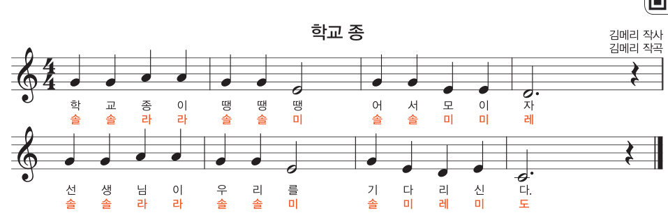
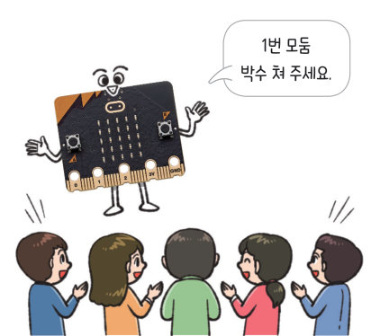

살아있는 교과서 · Ⅰ. 컴퓨팅 시스템 · 2. 피지컬 컴퓨팅 프로그래밍 · 03 28~31쪽
소리에 반응하는 애니메이션 장치 만들기
큰 소리가 나면 춤추며 노래하는 장치를 만들어 보자. 박수(또는 진짜 마이크)로 가상 마이크로비트를 깨워 ‘작동 시작’ 변수의 역할을 확인하고, 나만의 춤 아이콘을 그리고, ‘학교 종’을 작곡해 연주한 뒤, 모둠 박수 대결 장치를 실행해 보자.
🎯 학습 목표 — 문제 해결에 적합한 센서를 선택하고 동작을 제어하는 프로그램을 작성하여, 큰 소리가 나면 영상과 소리가 재생되는 애니메이션 장치를 만들 수 있다.
문제 상황 · 문제의 이해와 분석소리에 반응하는 애니메이션 장치 만들기 28~29쪽
28쪽“재미있는 영상 보고 있네.” “친구가 올린 짧은 영상을 보고 있어. 짧지만 특징을 잘 살려서 재미있어.” “만들기 어렵지 않을 것 같은데, 나도 한번 만들어 볼까?”
영상의 주요 장면을 추출한 사진이나 영상은 인터넷 게시글, 사회 관계망 서비스(SNS) 등에서 자주 볼 수 있다. 큰 소리가 나면 아이콘과 멜로디가 재생되는 애니메이션 장치를 만들어 보자.
28쪽소리 센서는 주변 소리의 크기를 측정하여 0~255 범위의 값으로 알려 준다. 뒷면의 MICROPHONE이 표시된 칩에 마이크가 내장되어 있으며, 소리가 감지되면 앞면의 마이크 모양 LED에 불이 켜진다. 스피커는 주파수를 이용해 다양한 음을 출력할 수 있다.
1알고리즘 설계하기 작은 문제와 알고리즘을 연결해 보자.
초기화
큰 소리 감지하기
음악 출력
애니메이션 출력
프로그래밍하기 · 평가하기소리에 반응하는 애니메이션을 실행해 보자 29~30쪽
‘작동 시작’ = 0
나만의 아이콘LED를 눌러 춤 동작 하나를 그려 보자
그린 그림은 애니메이션의 두 번째 장면으로 바로 쓰여요.
1평가하기 가상 마이크로비트로 확인하고 답해 보자.
애니메이션 시작을 감지하여 ‘작동 시작’ 변수가 1이 되는가?
음악과 애니메이션을 한 번 실행하면 ‘작동 시작’ 변수가 0으로 초기화되는가?
작은 소리(기준값 미만)에도 애니메이션이 시작되는가?
2큰 소리 기준값을 250에서 100으로 낮추면 애니메이션이 .
해 보기 · 모둠스피커와 소리 센서를 활용한 장치 만들기 31쪽

31쪽학교 종 (김메리 작사·작곡)
마이크로비트 작곡기‘학교 종’을 입력해 연주해 보자
건반을 눌러 악보 순서대로 음을 넣고 [▶ 연주]를 눌러 보자. 박자는 악보처럼 자동으로 맞춰 줘요.
(아직 입력한 음이 없어요)
1내가 입력한 ‘학교 종’ 악보 (25 음)
2위의 ‘학교 종’ 노래에 어울리는 애니메이션을 구상해 보자(장면별 LED 그림과 바뀌는 타이밍).
3 두 개의 모둠 중 박수 소리의 누적 크기가 큰 모둠을 알려 주는 장치를 만들어 보자. ① A 버튼을 누르면 5 초 동안 소리의 크기를 그래프로 보여 주면서 값을 누적하여 저장한다. ② B 버튼을 누르면 5 초 동안 같은 방법으로 저장한다. ③ 로고 모양의 터치 센서를 누르면 A와 B의 누적값을 비교하여 큰 문자를 출력한다.

31쪽“1번 모둠 박수 쳐 주세요.”
A 또는 B를 눌러 측정을 시작하고, 5 초 동안 👏 버튼을 빠르게 눌러 보세요.
3박수 대결 장치에서 A 모둠 누적값이 4120, B 모둠 누적값이 3890이면 로고를 터치했을 때 가 출력된다. 누적값을 저장하려면 모둠마다 써야 한다.
정리하기소리에 반응하는 애니메이션 장치
1소리 센서와 스피커
소리 센서는 주변 소리의 크기를 ~ 범위의 값으로 알려 주고, 는 주파수를 이용해 다양한 음을 출력한다. 큰 소리를 판단하려면 소리 크기를 과 비교한다.
평가 기준
스스로 평가
컴퓨팅 사고력 변수를 신호처럼 사용하여 음악과 애니메이션을 시작·종료하는 원리를 이해했는가?
컴퓨팅 사고력 악보를 음과 박자로 바꾸어 프로그램으로 표현할 수 있는가?
디지털 문화 소양 창의적인 아이디어로 애니메이션을 구상했는가?
제출학생 정보 · 제출하기
모든 활동을 마친 뒤 제출하면 전체가 한 번에 채점되고 피드백이 나타나요. 학년을 꼭 적어 주세요 — 답안은 선생님 스프레드시트(내 학년 시트의 정보 탭)에 기록돼요.